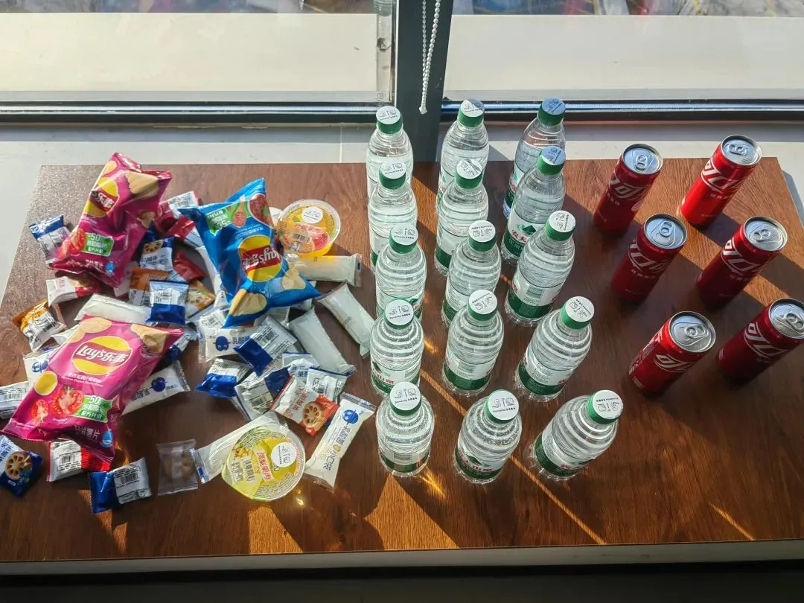
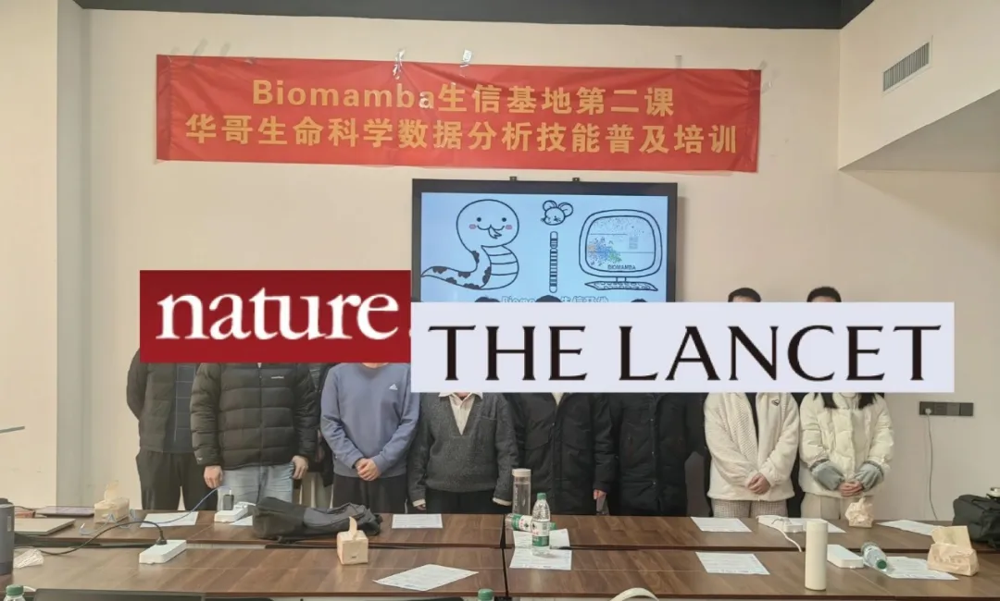

Biomamba主讲| 生信小白入门课
原文：https://mp.weixin.qq.com/s?__biz=MzAwMzIzOTk5OQ==&mid=2247526126&idx=1&sn=ab205f18c19b5b98b4b59b6c89b394ec&chksm=9b3c1fbeac4b96a859cb59a563ebb390b50a0f1120f2b9fd4c3ca601d5ba89b7eb3866221882#rd 合集：生信基地

Biomamba主讲


生信基地已经落地，我们也在积极探索为生信领域做贡献的新方法，希望能够给大家提供系统性、形成性、规范性的生信教学。这已经是我们的第四次线下 活动啦。往期活动 可见合辑：生信基地
此前的几次活动中我们也在不断的总结反馈与经验，期间发现各位来参加活动的老师与同学中很多对生物信息学、高通量测序这些内容的知识背景 并没有基本的了解，这对后面的生信实战学习造成了很大的障碍 。因此Biomamba以此前给硕士生上课的框架(零翘课&double人数旁听)为基础进行修订。给大家完成一次"生信小白入门课 "，为大家进行生物信息学基本概念与常见组学的普及(非实操 ，不要幻想一天可以掌握那么多分析技能，仅提供概论教程 与学习思路 &方法分享)。
时间 ：2025年1月4日(周六) 09:00~17:00地点 ：南京市江宁区，详细地址报名咨询~线上线下 均可参加目标 ：生信小白可以通过此次活动了解"什么是 生物信息学？"、"为什么 要学习生物信息学？"、"怎样 学习生物信息学？"目录 ：(暂定，可能会有补充)：
1、生物信息学&高通量测序
2、(sc)RNA-Seq的前世今生
3、可视化实例
4、蛋白质各级结构及理化性质预测
5、空间转录组学概论
6、生信文章实例讲解
7、R语言入门
报名/缴费 请联系客服微信
已有生信基地联系方式的同学无需重复添加

除了知识之外，现场还能够给大家提供：
茶水吧、咖啡机、零食柜

各类饮料、零食小吃


可持续发展
此前的活动都是免费的，现在到了需要考虑存续的时候了，毕竟在生信基地里已经陆陆续续投入了200w+ ，每天的人员+场地运维成本仍需四位数 ，目前还没有志同道合的赞助商。所以，丝滑连招，欢迎有各种合作需求的朋友联系我们(客服微信Biomamba_zhushou)：
往期活动现场
大家都有在认真学习！





如何联系我们

 公众号后台消息回复不便，这里给大家留一下领取资料及免费服务器(足够支持你完成硕博生涯的生信环境)的微信号 ，方便各位随时交流(别问在么，添加时直接说来意)。呼声很高的交流群 也建好了，欢迎大家入群讨论：
公众号后台消息回复不便，这里给大家留一下领取资料及免费服务器(足够支持你完成硕博生涯的生信环境)的微信号 ，方便各位随时交流(别问在么，添加时直接说来意)。呼声很高的交流群 也建好了，欢迎大家入群讨论：
大家可以阅读完这几篇之后添加给生信入门初学者的小贴士 如何搜索公众号过往发布内容
已有生信基地联系方式的同学无需重复添加
 您点的每个赞和在看，我都认真当成了喜欢
您点的每个赞和在看，我都认真当成了喜欢